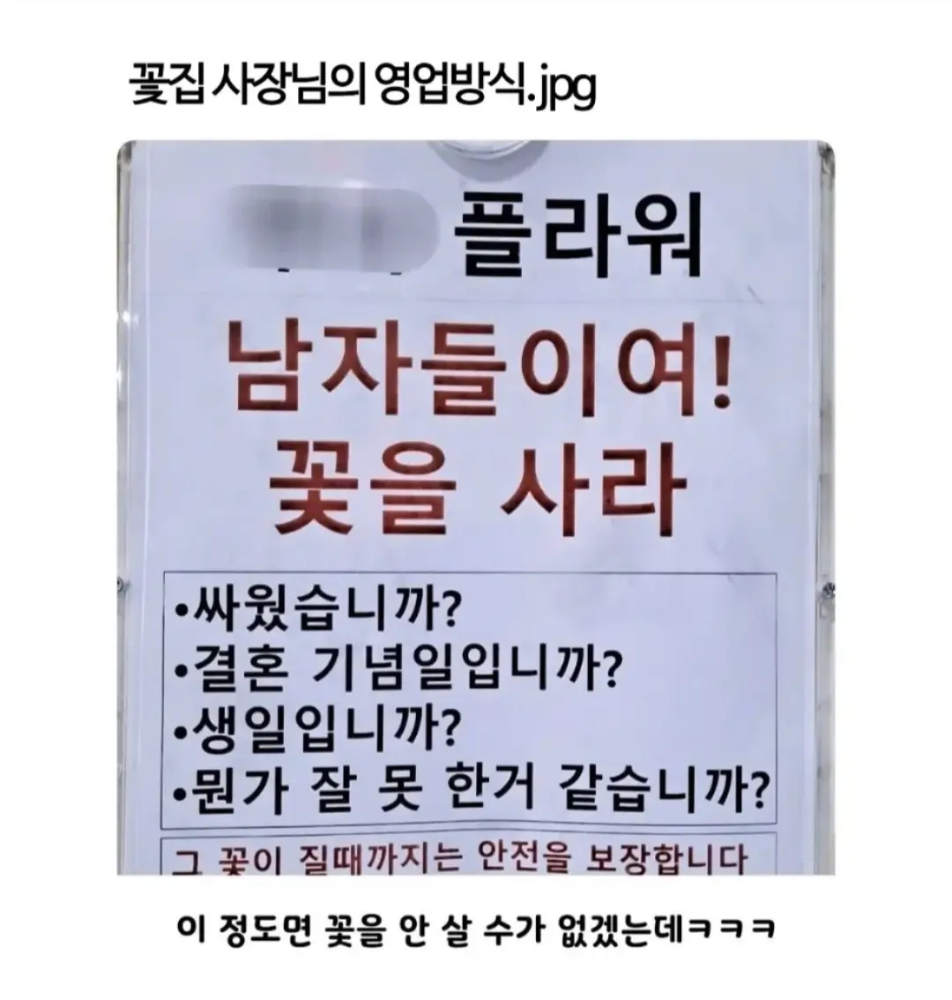
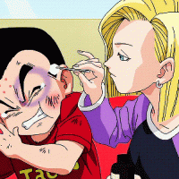

꽃집 사장님의 영업 방식
댓글
어이가없어서라도 웃음부터나와서 어느정도 화가 가시는듯ㅋㅋ
이집 장사 잘하네..ㅋㅋㅋ
멘트 지린다 미친ㅋㅋㅋㅋ
"그 꽃이 질때까지는 안전을 보장합니다."
부적효과 지리네
현실판 나폴리탄
꽃을든남자
"필요하게 만들어라"
사망방지ㅋㅋㅋ

ㄹㅇ 효과 좋긴해. 뭐하러 사냐고 하면서도 살짝 웃는 모습에 다음에도 그 모습 보고싶어 또 사주지
쌌으니까 사고 샀으니까 싼다
뭔가 잘못한거같습니까? ㅋㅋㅋㅋㅋㅋㅋㅋㅋㅋㅋㅋ
이거 쌍촌동에서본거같아.. 무인꽃집
난 일마치고 코스트코 들릴때 마다 사긴 함. 요즘은 반응이 재미없어서 좀 기다리다가 살거긴 한데
장사천재
얼마나 팔고싶은건지 감도안옴